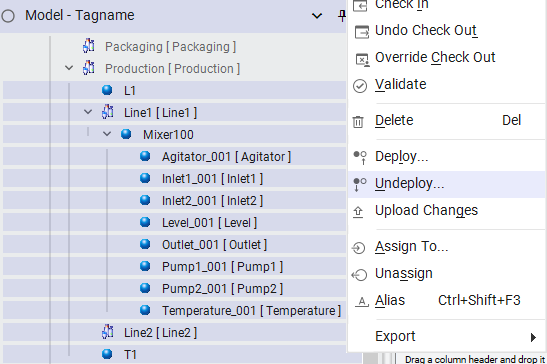
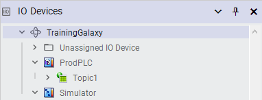
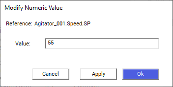
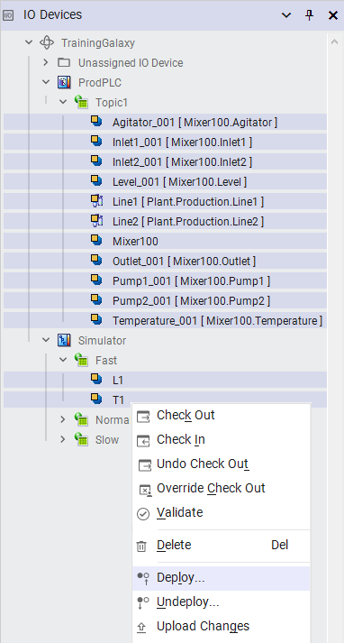
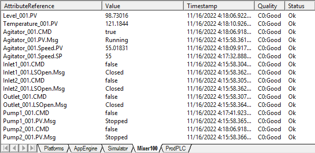
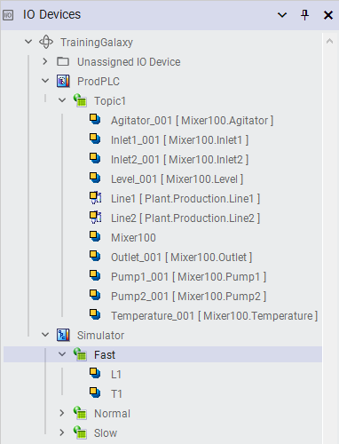

Source: AVEVA Application Server 2023 Training Manual, Module 5, Lab 11 (pages 5-29 to 5-34)
This hands-on lab walks you through verifying that your deployed mixer objects are properly connected to the OI Server, modifying I/O values from the Galaxy IDE, and confirming end-to-end data flow between the application and the simulated field devices.
Reference: Module 5, Lab 11 (pages 5-29 to 5-30)
Before beginning Lab 11, ensure that your mixer objects have been successfully deployed from Lab 10. The deployment must be active — objects in the "Off-Scan" (undeployed) state cannot communicate with field devices.
ProdPlatform → AppEngine1)Mixer100 and its children) show a "Running" state in the Model View
If your objects are not yet deployed, return to Lesson 17 (Lab 10) and complete the deployment steps before proceeding.
Reference: Module 5, Lab 11 (pages 5-29 to 5-31)
The IO Devices view in the Object Browser shows the complete OI Server hierarchy — from the Galaxy root down through the platform, engine, topic, and individual tags. This is your primary tool for confirming that the OI Server is communicating with the application.
To access the IO Devices view:
TrainingGalaxy → ProdPlatform → AppEngine1 → Topic1 → TagsAgitator_001, Inlet1_001, Level_001, etc.) are listed and populated
Reference: Module 5, Lab 11 (pages 5-31 to 5-33)
One of the most powerful features of Application Server is the ability to write values directly to field devices from the Galaxy IDE. This is essential for testing setpoints, commissioning equipment, and troubleshooting control logic.
To modify a numeric attribute value:
Mixer100 → Agitator_001)Speed.SP) — or right-click and select Modify Value
The dialog provides three distinct actions:
| Button | Behavior | When to Use |
|---|---|---|
| Apply | Writes the value to the attribute immediately but keeps the dialog open | When you want to test a value change and then try another value without re-opening the dialog |
| OK | Writes the value to the attribute and closes the dialog | When you are done making changes and want to commit and close |
| Cancel | Closes the dialog without writing any changes | When you decide not to modify the value after all |
Galaxy IDE → Application Server Runtime → OI Server → Simulator/PLCReference: Module 5, Lab 11 (pages 5-32 to 5-34)
After writing a value, you need to verify that the change propagated correctly through every layer of the system. This verification confirms that your I/O binding is working properly.
| Step | What to Check | Where to Look |
|---|---|---|
| 1 | Write a value — Use the Modify Numeric Value dialog to set a test value (e.g., Speed.SP = 55) | Galaxy IDE — Modify Numeric Value dialog |
| 2 | Check the Object Viewer — The attribute should reflect the new value | Object Viewer (F12) — attribute value column |
| 3 | Check the OI Server — The tag value in the OI Server should match | OI Server tag browser or diagnostic window |
| 4 | Check the Simulator/PLC — The simulated tag should show the updated value | Simulator window or PLC programming software |
| 5 | Check the HMI — If InTouch or OMI is connected, the operator screen should display the new value | HMI client application |


Topic1.Agitator_001)Reference: Module 5, Lab 11 (pages 5-33 to 5-34)
I/O binding is bidirectional — data flows in both directions between the application and the field:
| Direction | What Happens | Example |
|---|---|---|
| Write-Down (App → Field) | The operator or application writes a setpoint value that travels through the OI Server to the PLC | Setting Speed.SP = 55 from the Galaxy IDE sends the value to the agitator motor controller |
| Read-Up (Field → App) | The PLC's sensor values are read by the OI Server and presented as attribute values in the application | A level sensor reading of 64.47 appears on Level_001.PV in the Galaxy |

Reference: Module 5, Lab 11 (pages 5-29 to 5-34)
Open the Model View and verify that Mixer100 and its child objects are deployed and running. If they show as undeployed (Off-Scan), deploy them first.
Open the Object Browser and switch to the IO Devices view. Navigate the tree to confirm that your OI Server topic is visible and that tags (e.g., Agitator_001, Level_001, Inlet1_001) are populated with values.
Select Agitator_001 in the Model View and press F12 to open the Object Viewer. Note the current values of all attributes — especially Speed.SP (setpoint) and Speed.PV (process variable).
Double-click on Speed.SP in the Object Viewer to open the Modify Numeric Value dialog. Enter 55 and click Apply. The dialog stays open — observe that the value has been written.
Check the Object Viewer — Speed.SP should now show 55. Then check the OI Server tag browser and the simulator window to confirm the value propagated through the entire chain.
In the still-open dialog, change the value to 75 and click OK. The dialog closes. Verify again that the value updated everywhere.
If using the Simulator, change a sensor value in the simulator (e.g., modify the level reading). Then check the Galaxy — the corresponding attribute (e.g., Level_001.PV) should update to reflect the new simulator value.
Record your observations in a table:
| Attribute | Original Value | Value Written | Confirmed in Object Viewer? | Confirmed in Simulator? |
|---|---|---|---|---|
| Speed.SP | ___ | 55 → 75 | ☐ | ☐ |
| Level_001.PV | ___ | ___ | ☐ | ☐ |
| Inlet1_001.CMD | ___ | ___ | ☐ | ☐ |
| Task | Key Learning |
|---|---|
| Confirmed deployment status | Objects must be deployed (not Off-Scan) before they can communicate with field devices |
| Inspected the IO Devices view | The IO Devices tree shows the complete OI Server hierarchy and tag values |
| Modified attribute values | The Modify Numeric Value dialog writes setpoints through I/O binding to the field device |
| Used Apply vs. OK | Apply writes and keeps the dialog open; OK writes and closes; Cancel discards changes |
| Verified end-to-end data flow | Values must be confirmed at every layer: Galaxy → Runtime → OI Server → Simulator/PLC |
| Tested bidirectional communication | Data flows both ways — writes go down to the field, reads come up from the field |
What is the difference between clicking Apply and clicking OK in the Modify Numeric Value dialog?
Apply writes the value to the attribute immediately but keeps the dialog open, allowing you to make additional changes without re-opening it. OK writes the value and closes the dialog. Cancel closes the dialog without writing any changes.
Why must objects be deployed before you can modify their I/O values?
Deployment pushes objects from the Galaxy database (development environment) to the runtime engine. Only deployed objects are executing and communicating with field devices through OI Servers. Undeployed (Off-Scan) objects exist only in the Galaxy database and have no I/O communication — they use simulation values or internal expressions only.
What does the IO Devices view in the Object Browser show you?
The IO Devices view shows the complete OI Server hierarchy — from the Galaxy root through the platform, application engine, topic, and down to individual tags. It lets you confirm that the OI Server is running, that topics are configured, and that tags are populated with live values from the field devices.
If you write a value of 55 to Agitator_001.Speed.SP from the Galaxy IDE, trace the complete path that value takes to reach the field device.
The value follows this path: Galaxy IDE (Modify Numeric Value dialog) → Application Server Runtime Engine (attribute I/O binding resolves the I/O Source string) → OI Server (writes to the configured topic and tag) → Simulator/PLC (receives the new setpoint value). This is a "write-down" operation — from the application layer to the field layer.
What does it mean that I/O binding is bidirectional?
Bidirectional means data flows in both directions: (1) Write-Down — the operator or application writes setpoint values that travel through the OI Server to the PLC/field device, and (2) Read-Up — sensor readings and process values from the PLC/field device travel through the OI Server and appear as live attribute values in the application. Both directions must work for the control system to function properly.